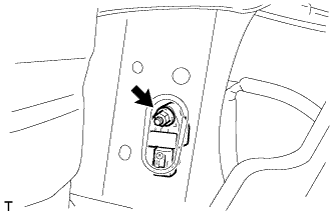

FRONT AIRBAG SENSOR > INSTALLATION |
| 1. INSTALL FRONT AIRBAG SENSOR |
 |
Check that the engine switch is off.
Check that the cable is disconnected from the battery negative (-) terminal.
Connect the connector.
Install the front airbag sensor with the nut.
Check that there is no looseness in the installation parts of the front airbag sensor.
| 2. INSTALL HEADLIGHT ASSEMBLY |
Install the headlight assembly (Click here).
| 3. CONNECT CABLE TO NEGATIVE BATTERY TERMINAL |
| 4. CHECK SRS WARNING LIGHT |
Check the SRS warning light (Click here).